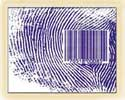

Kuran'da, insanlarý ölümden sonra diriltmenin Allah için çok kolay olduðu anlatýlýrken, insanlarýn özellikle parmak uçlarýna dikkat çekilir:
|
“Evet;
onun parmak uçlarýný dahi derleyip-(yeniden)
düzene koymaya güç yetirenleriz.„ (Kýyamet Suresi, 4) Ayette parmak uçlarýnýn vurgulanmasý, son derece hikmetlidir. Çünkü tüm insanlarýn parmak izi, tamamen kendilerine özeldir. Þu an Dünya üzerinde yaþayan her insanýn parmak izi birbirinden farklýdýr. Dahasý, tarih boyunca yaþamýþ insanlarýnki de birbirinden farklýdýr. Ýþte bu nedenle parmak izi, herkese özel çok önemli bir "kimlik kartý" sayýlmakta ve tüm dünyada bu amaçla kullanýlmaktadýr. Ancak önemli olan, parmak izinin özelliðinin ancak 19. yüzyýlýn sonlarýna doðru keþfedilmiþ olmasýdýr. Ondan önce, insanlar parmak izini hiçbir özelliði ve anlamý olmayan çizgiler olarak görmüþtür. Fakat Kuran'da, o dönemde kimsenin dikkatini dahi çekmeyen parmak izleri vurgulanmakta ve bu izlerin ancak çaðýmýzda fark edilen önemine dikkat çekilmektedir. |
 Tek yumurta ikizleri de dahil olmak üzere, her insanýn parmak izi kendine özeldir. Baþka bir deðiþle, insanlarýn parmak uçlarýnda kimlikleri þifrelenmiþtir. Bu þifreleme sistemini, günümüzde kullanýlmakta olan barkod sistemine benzetmek de mümkündür. |